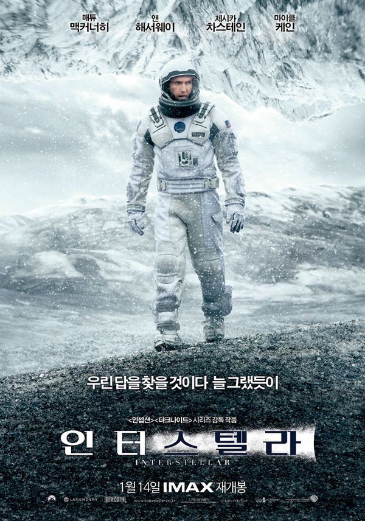
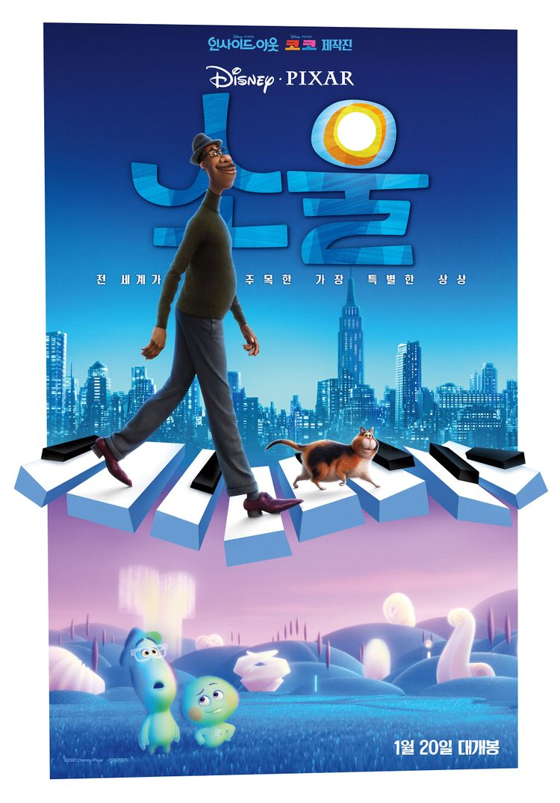
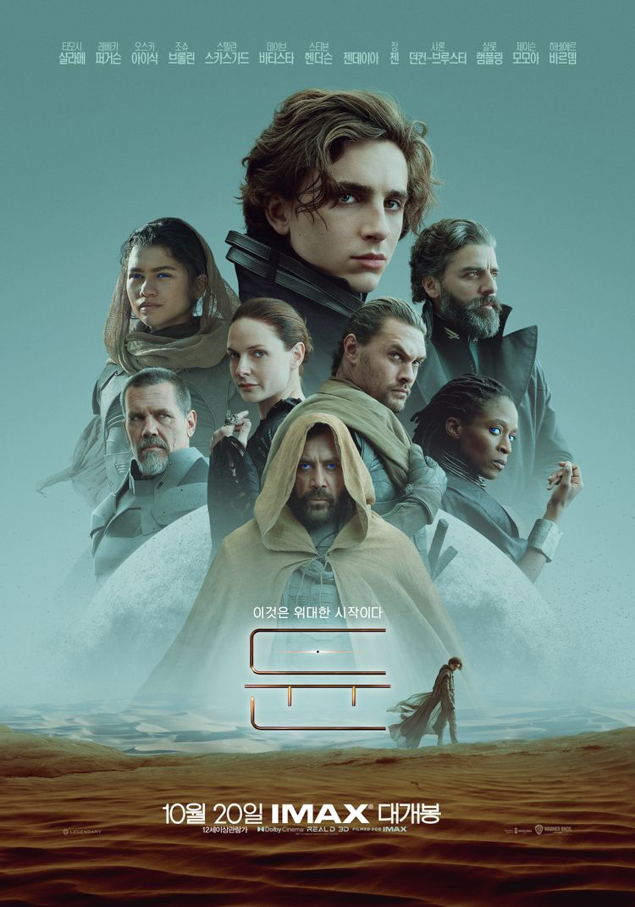
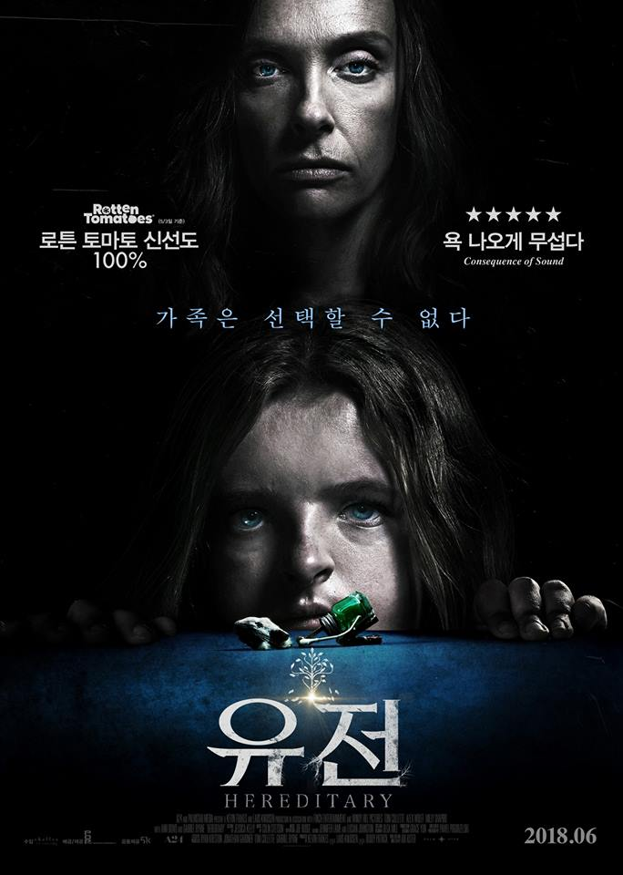
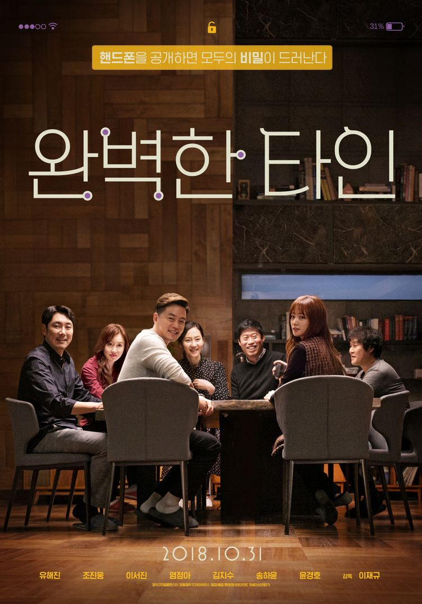

| 번호 | 제목 | 포스터 | 줄거리 | 바로가기 |
| 1 | 인터스텔라 |  | “우린 답을 찾을 거야, 늘 그랬듯이” 세계 각국의 정부와 경제가 완전히 붕괴된 미래가 다가온다. 지난 20세기에 범한 잘못이 전 세계적인 식량 부족을 불러왔고, NASA도 해체되었다. 이때 시공간에 불가사의한 틈이 열리고, 남은 자들에게는 이 곳을 탐험해 인류를 구해야 하는 임무가 주어진다. 사랑하는 가족들을 뒤로 한 채 인류라는 더 큰 가족을 위해, 그들은 이제 희망을 찾아 우주로 간다. 그리고 우린 답을 찾을 것이다. 늘 그랬듯이... | 인터스텔라 |
| 2 | 소울 |  | 조 가드너는 뉴욕에서 중학교 음악 선생님으로 일한다. 어린 시절 아버지를 따라 피아노를 접한 뒤로 그의 머릿속에는 재즈에 대한 열정이 가득하다. 운좋게도 정규직으로 전환이 되었고, 조의 어머니는 아들이 안정적인 직장을 얻게 된 것을 기뻐한다. 하지만 음악인으로서 공연을 하며 살고 싶었던 조는 기분이 좋지만은 않다. | 소울 |
| 3 | 듄 |  | ' 신화적이고 감동적인 영웅의 여정인 듄은 위대한 운명으로 태어난 폴 아트레이데스의 이야기이다. 그는 가족과 백성들을 위해 우주에서 가장 위험한 행성으로 가야한다. 그는 행성에서 가장 소중한 자원을 두고 악의 세력과 투쟁한다. ' "위대한 자는 지도자가 되고자 하는 게 아니라, 부름에 응답한다." 10191년[11], 아트레이데스 가문의 후계자인 폴(티모시 샬라메)은 시간과 공간을 초월해 과거와 미래를 모두 볼 수 있고, 더 나은 미래를 만들 유일한 구원자인 예지된 자의 운명을 타고났다. 그리고 어떤 계시처럼 매일 꿈에서 아라키스의 행성에 있는 한 여인을 만난다. 아라키스는 우주에서 가장 비싼 물질인 스파이스의 생산지로 대가문 세력들의 음모가 격돌하는 전쟁터. 귀족들이 지지하는 아트레이데스 가문에 대한 황제의 질투는 폴과 그 일족들을 죽음이 기다리는 아라키스로 이끄는데... 두려움에 맞서라, 거역할 수 없는 운명을 맞이하라! 이것은 위대한 시작이다! | 듄 |
| 4 | 유전 |  | '애니'는 일주일 전 돌아가신 어머니의 유령이 집에 나타나는 것을 느낀다. 애니가 어머니와 닮았다며 접근한 수상한 이웃 '조앤'을 통해 엄마의 비밀을 발견하고, 자신이 엄마와 똑같은 일을 저질렀음을 알게 된다. 그리고 마침내 애니의 엄마로부터 시작돼 딸 '찰리'와 아들 '피터'에게까지 이어진 저주의 실체가 정체를 드러내는데··· | 유전 |
| 5 | 완벽한 타인 |  | 우리 게임 한 번 해볼까? 다들 핸드폰 올려봐 저녁 먹는 동안 오는 모든 걸 공유하는 거야 전화, 문자, 카톡, 이메일 할 것 없이 싹! 오랜만의 커플 모임에서 한 명이 게임을 제안한다. 바로 각자의 핸드폰을 테이블 위에 올려두고 통화 내용부터 문자와 이메일까지 모두 공유하자고 한 것. 흔쾌히 게임을 시작하게 된 이들의 비밀이 핸드폰을 통해 들통나면서 처음 게임을 제안했던 것과는 전혀 다른 상상치 못한 결말로 흘러가는데…. 상상한 모든 예측이 빗나간다! | 완벽한 타인 |
이름:
인터스텔라 소울 듄 유전 완벽한 타인